The KPFK Podcasts website lets anyone browse every program on KPFK's schedule, play any episode, listen live, search everything, and read along with the transcript — on a phone, a tablet or a computer. Nothing to install, no account, no sign-in.
podcasts.kpfk.org
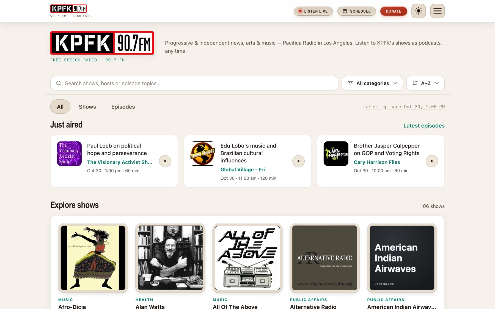
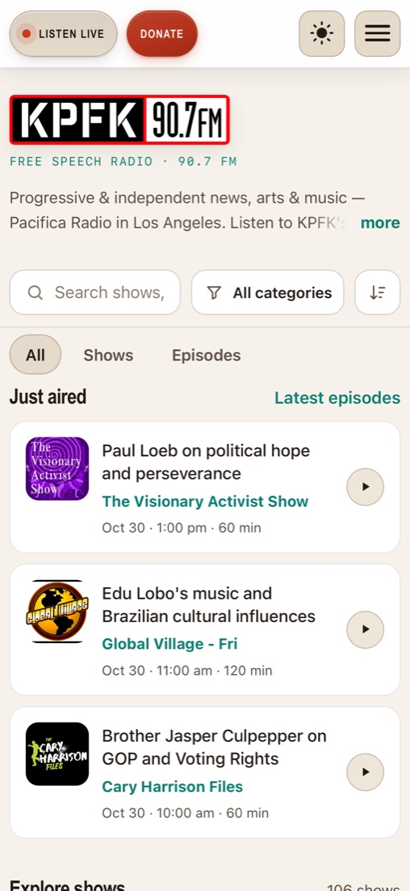
106 programsAnd about 1,100 episodes today — everything on KPFK's published schedule, plus its podcasts.
Read alongA title, a summary and a full transcript for nearly every talk episode, in English and Spanish.
No personal dataNo accounts, no tracking, no advertising. The station sees counts — never who.
Why it matters
KPFK's programs keep their value long after they air. The website gives every listener — and anyone a listener shares a link with — a way back to them: catch up on a show they missed, find the moment someone said something, read along, or tune in live.
It runs on its own: it reads Pacifica's archive feeds directly, so every program that airs and is archived appears on its own, with no extra work for station staff. The same archive powers the KPFK Podcasts app for iPhone, iPad and Android.
For listeners
What the website does
Every program, one tap away
The home page shows what just aired and every program with its artwork, host and latest broadcast. Listeners can sort A to Z, by what aired most recently, or by category — News, Public Affairs, Arts & Culture, Health, Music, En Español.
Each program has its own page: description, links, and every episode, newest first, with the episode's title and summary.
Home — light
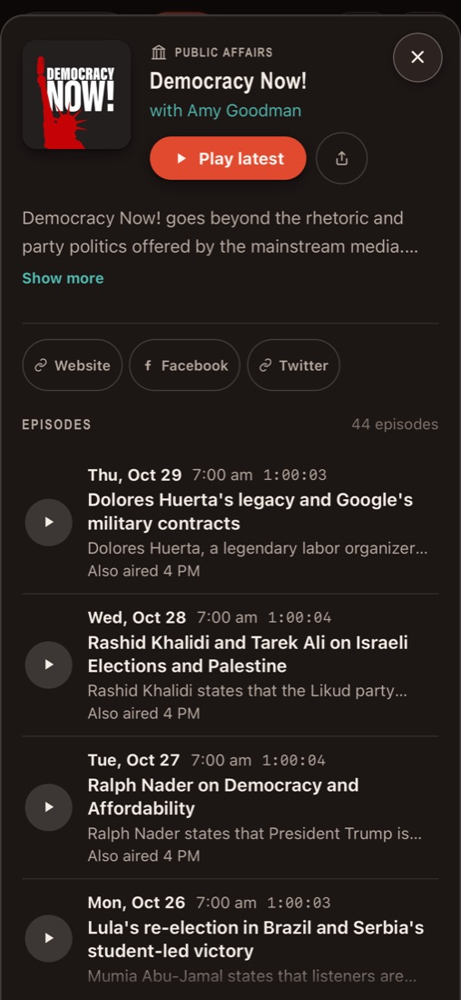
A program — dark
The player, and KPFK live from any page
One tap plays an episode; the player stays at the bottom of the screen while listeners keep browsing, and remembers where each listener stopped — without an account.
Live in the header shows what is on air now, the host, the time slot and what comes next, with a link to the program's past episodes. KPFK's live player also has a page of its own: see the next page.
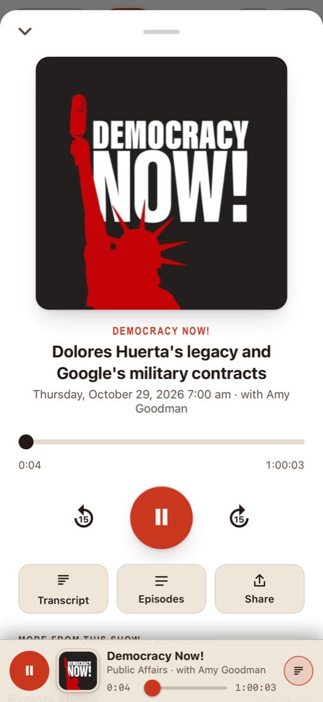
Now playing — light
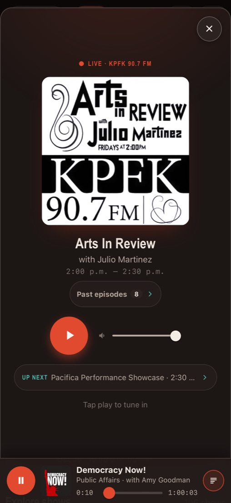
Live, from any page — dark
New · since 27 October 2026
Listen Live: KPFK's live player, at its own address
podcasts.kpfk.org/live is a plain live player that kpfk.org's Listen Live buttons can point straight at, and that can be shared anywhere. It does live things only.
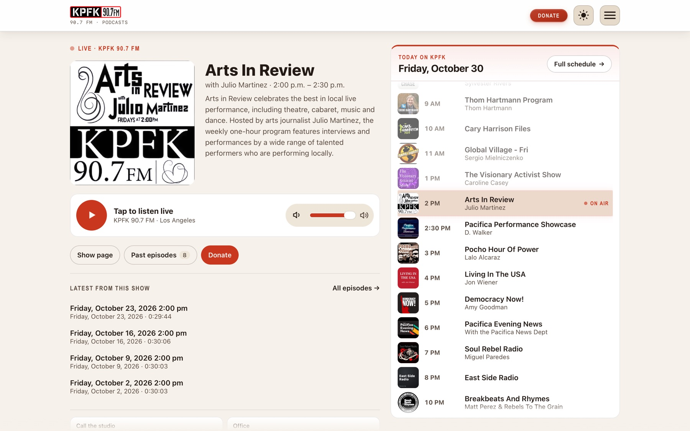
Listen Live on a computer — light · as it first opens in Safari
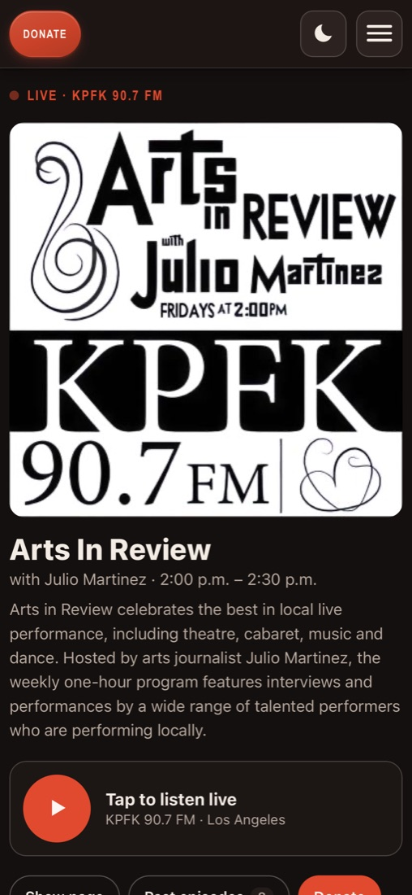
On a phone — dark
One click to audio
It starts playing as it opens. Where a browser blocks that (Safari usually does), the only thing in the way is one large Play button.
What's on now
The program on air, its host, times and description, the song playing, and the show's latest episodes. It moves on by itself at the top of the hour.
Today on KPFK
Today's schedule, from KPFK's own published schedule, with the program on air marked. On a phone: the next two programs.
Call, give, get the app
The studio call-in line, the office line, the station's signals, Donate, and on phones a link to the KPFK app.
Nothing in the way of the stream
The page's own Play is the player. On a phone, a slim Play / Stop strip stays in the header while listeners scroll.
One window, no surprises
A show, an episode or the full schedule opens on the main podcast site, after a short note that says so; the stream keeps playing throughout.
Listen along — the transcript, as it plays
The transcript scrolls with the broadcast, the line being spoken highlighted. Listeners tap any line to jump there, search within the episode, and make the text larger or smaller.
For music programs, Playlist shows the station's logged songs the same way.
Valuable for people who are deaf or hard of hearing, for following a fast conversation, and for finding a quote.
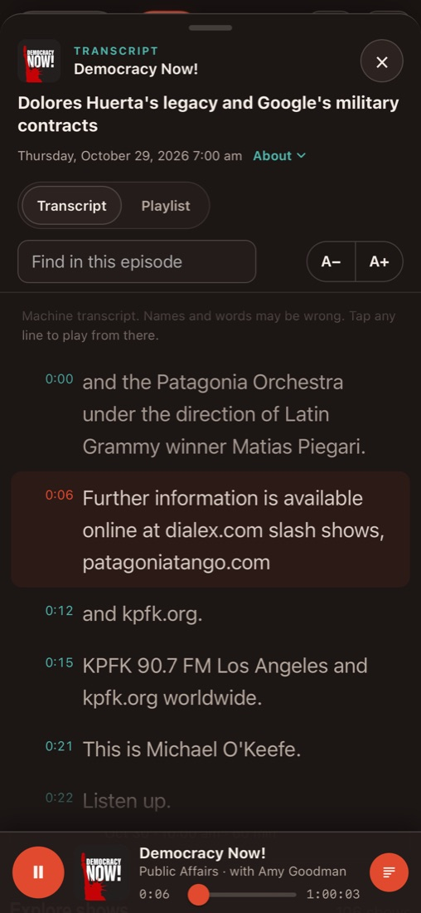
Transcript — dark
Search everything
One search covers program names, hosts, and every episode's headline and summary. Best matches come first, and every result shows the words that matched — a program found through its episodes says so. Searching "climate" finds 8 programs and 59 episodes, grouped by program.
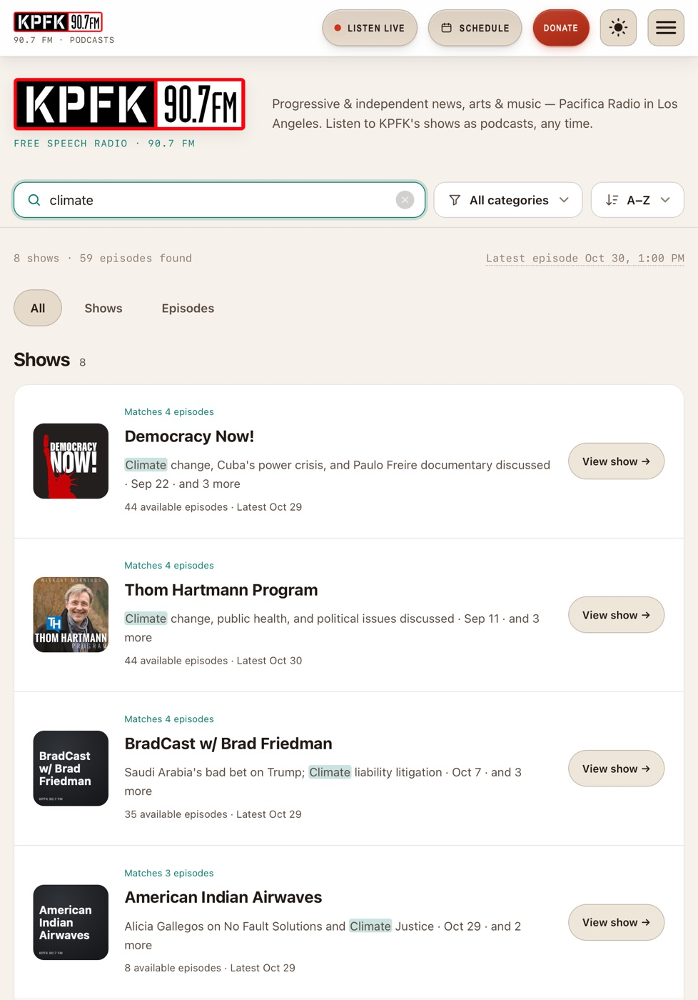
Search on a tablet — light
The schedule, and a week at a glance
The schedule shows the next seven days as KPFK publishes them, day by day, with the program on the air right now marked Live; tap any program to see its page. On a computer, the Grid button lays the whole week out side by side, like a printed program guide.
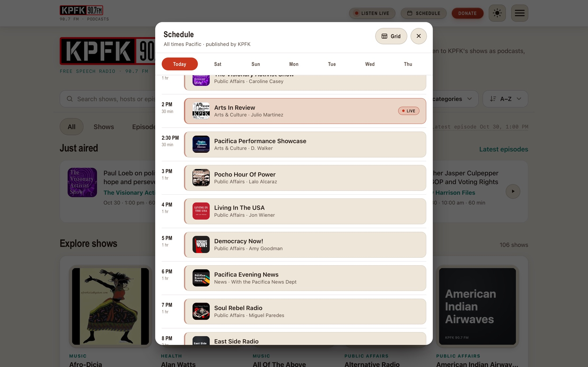
The schedule — light · the Grid button opens…
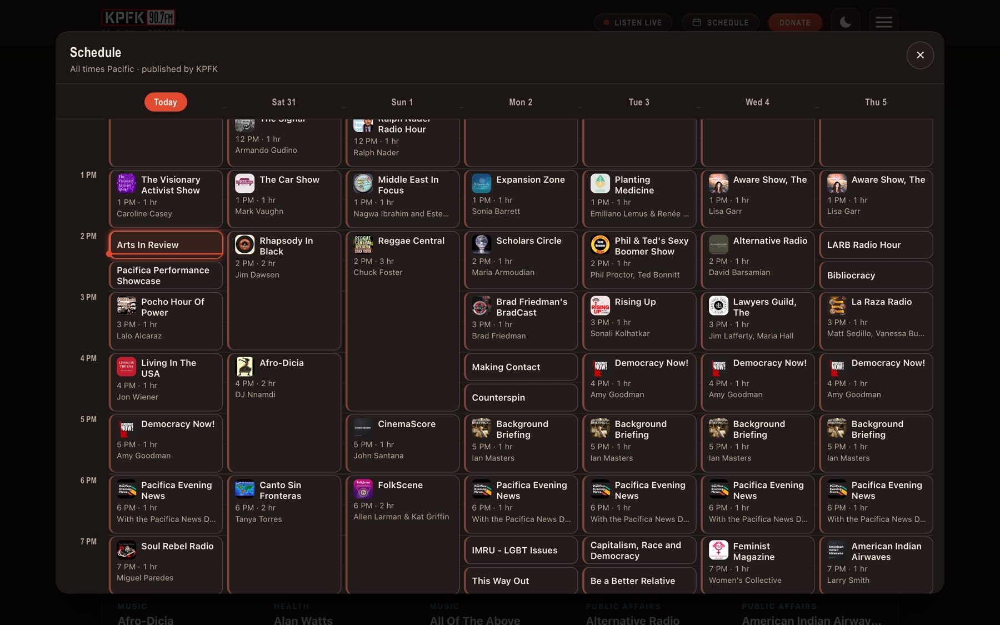
…the whole week — dark
Behind the scenes
What makes it dynamic
KPFK's own listings give each program a name and a time slot, but most episodes arrive with no title of their own. What brings the archive to life is an automatic step that happens after every broadcast:
1KPFK airs a program
2Pacifica's archive records it
3Pacifica's transcript service listens to the recording
4The website shows a headline, a summary, the guests, and the full transcript
From a date to a story
Without it, an episode is just "Democracy Now! · Oct 15". With it, the same episode reads "Justin Pearson on data centers and community impact", with a short summary of what was said and who said it.
It happens on its own, a few hours after each program airs, in English and in Spanish. Where the station has written its own description, that always comes first.
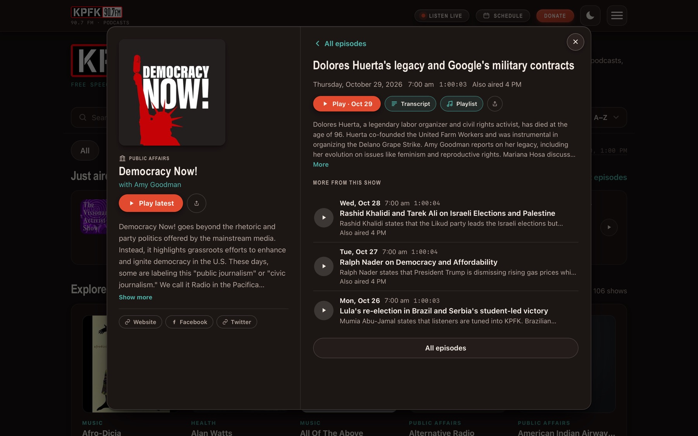
An episode with its headline and summary — dark
Time markers on every line
Each line of the transcript knows when it was spoken, so the text follows the audio and a tap on any line plays from that moment. Playlists work the same way, with each song's time from the station's logs.
Search that knows what was said
Because every episode has a headline and summary, a search for a person or a subject finds the episodes where it came up — not only program names.
Better shares
Every episode has a link. Shared in Messages, WhatsApp, Facebook or Slack, it shows a card with the program's artwork and the episode's own headline — and it opens on this website for anyone, app or not.
Honest labels
All of this is machine-made and marked so: "names and words may be wrong." It reaches the KPFK Podcasts app too, from the same source.
Re-runs listed once New
Many programs air twice a day. The site recognises a repeat by what was said, not by its title, so each broadcast is listed once, with a note such as "Also aired 4 PM". 77 repeats are folded this way today.
Pages with their own address New
The schedule, the week grid and Listen Live each have a link of their own — podcasts.kpfk.org/schedule, /grid and /live — for the station's website, social posts or a printed flyer.
One website
Made for every screen
The same address works everywhere and arranges itself for the screen in hand. On a phone, the player, program pages and transcript slide up from the bottom; on a computer, live and each program open as cards over the page, and the transcript sits beside it while listeners keep browsing. Light and dark follow the device's own setting.
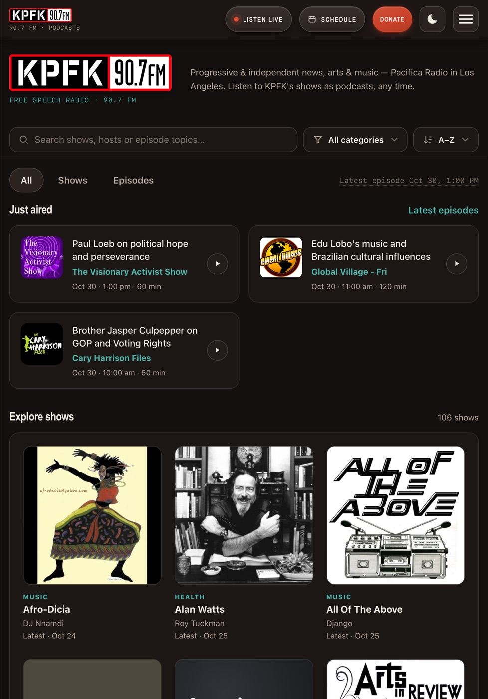
Tablet — home, dark
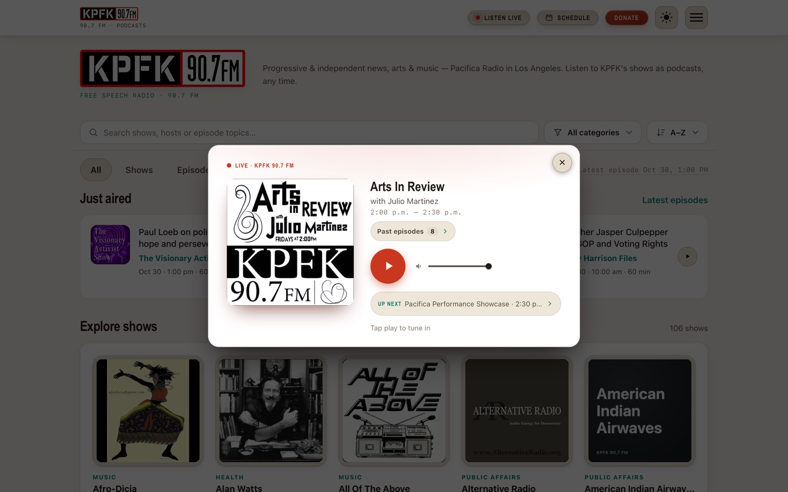
Computer — live, from any page, light
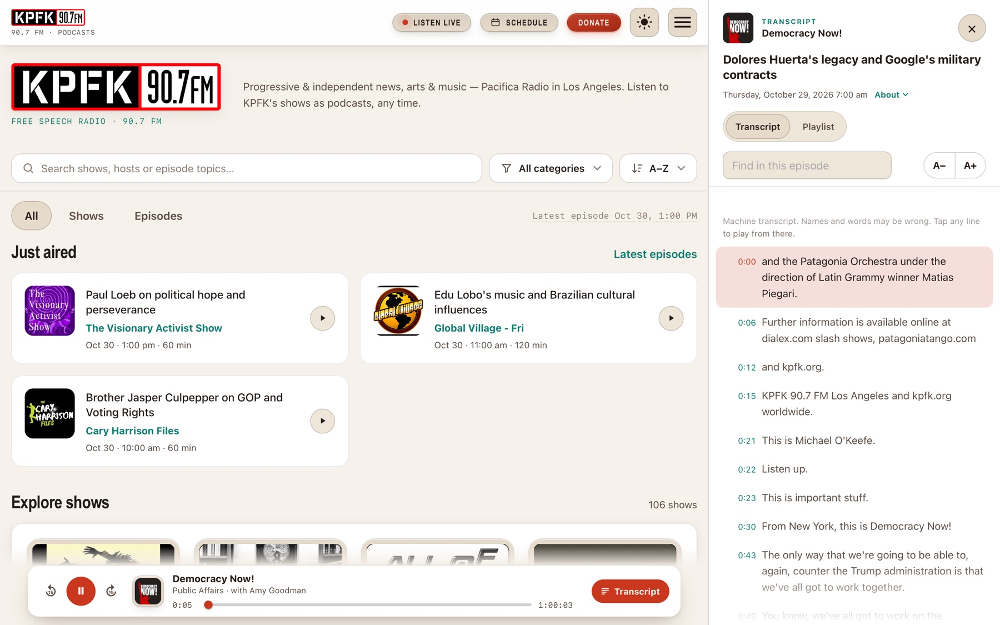
Computer — transcript beside the page, light
For station staff
The studio: what the station sees
Staff sign in at podcasts.kpfk.org/studio with the station's studio password. It is a private dashboard — listeners never see it, and nothing in it can change what is on the air.
Sign in
One password, set by the station on its server. Without it the studio does not exist; with it, staff get the dashboard, the reports and the station's settings.
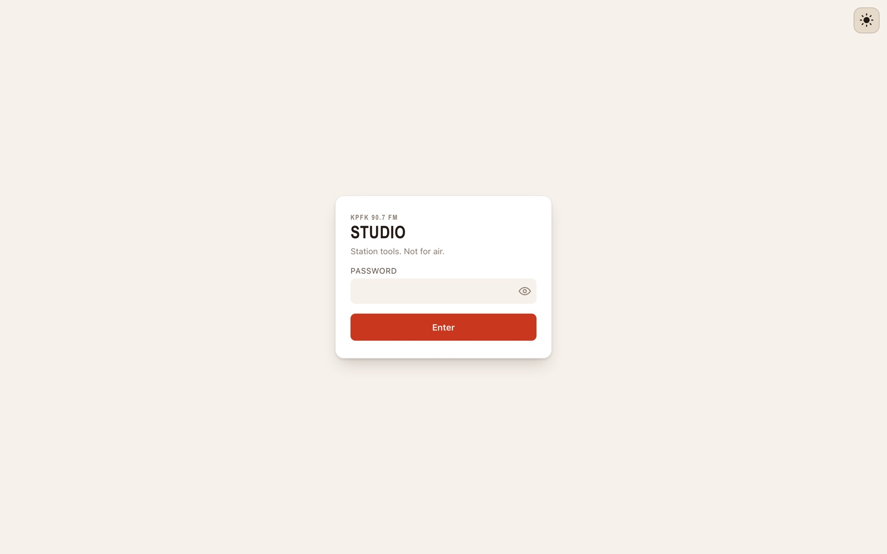
Studio sign-in — light
Listening and the archive, at a glance
The archive right now — programs, episodes, hours of audio. Then listening for the last 7, 30 or 90 days, the year or all time: time listened, live listening, episode plays, page views and searches; minutes listened per day; the most listened programs; and how often listeners open transcripts and playlists. Further down: which programs have the thinnest archive, and problems in Pacifica's feed (failed recordings, wrong lengths) flagged for staff.
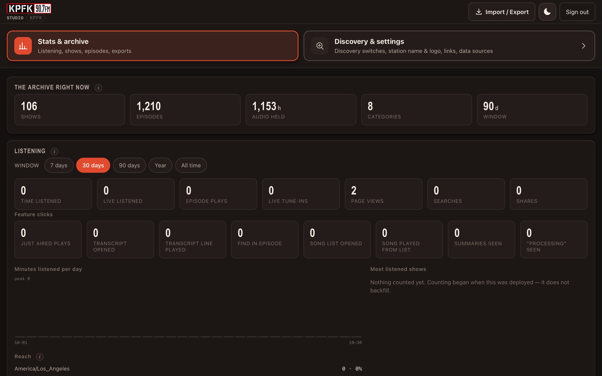
The dashboard — dark (example figures from a test copy)
Import / Export — for Pacifica, and for moving the site
Back up or move this site: one file holds everything the site has collected since the day it started. Restored on a new server, the new site shows exactly the same figures.
Stats for Pacifica and the station: pick a span — this month, last month, this year, all time or any dates — and download a master spreadsheet (one tab per table) or a .zip of CSV and JSON files with a read-me for every column. Every station's files use the same names and columns, so Pacifica can add stations together and compare them. As the dialog itself says: nothing in any of these files identifies a listener.
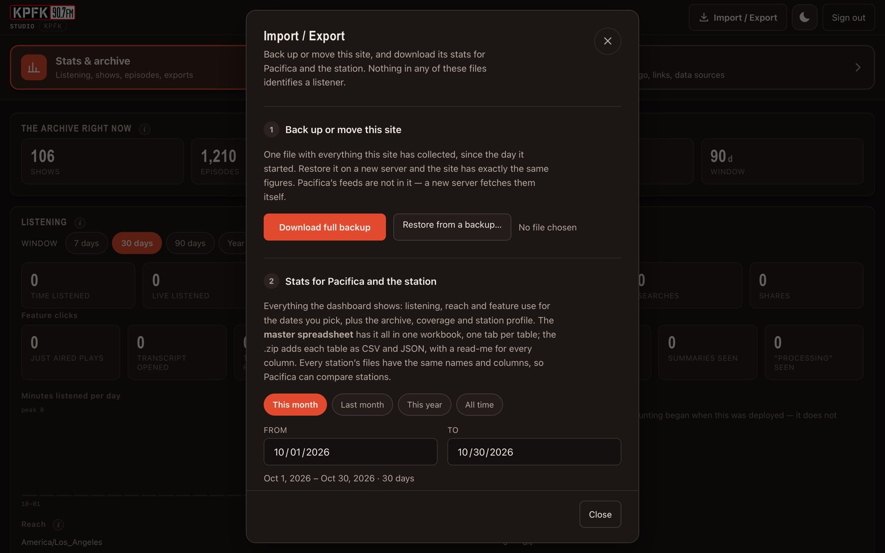
Import / Export — dark
A printable report
For a board meeting or a funder: a clean report of listening and the archive for any period — totals, minutes per day, the most listened programs and where listeners are, by their device's clock rather than any address. Print it or save it as a PDF.
Settings
Staff can switch transcripts and summaries on or off for listeners at once, and edit what listeners see of the station — name, logo, side-menu links and social accounts — with a review step and undo.
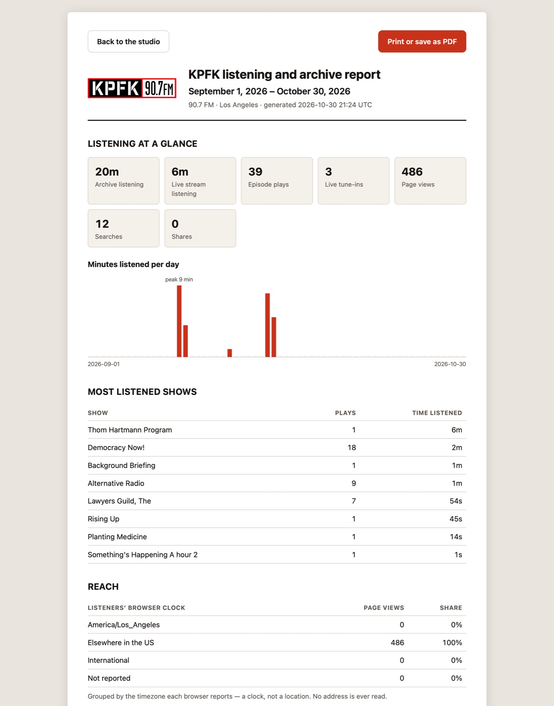
Printable report — light (example figures)
For station staff · new since 27 October 2026
Fund drives, from the studio
During a drive, staff switch it on in the studio and keep the amount pledged up to date. Listeners see a fund drive banner across Listen Live and a progress capsule under the player, which updates itself about once a minute. No technical change, no waiting.
Running a drive
Give the drive a name and a goal, check the preview — light or dark, phone or wide — and switch it on; a box asks first. Update "Pledged so far" as totals come in, and switch it off when the drive ends. Undo puts back the last version.
Its own donate page
Optionally, a drive can send Donate to its own page. The studio checks the page at once and warns if it won't open inside the site's Donate window.
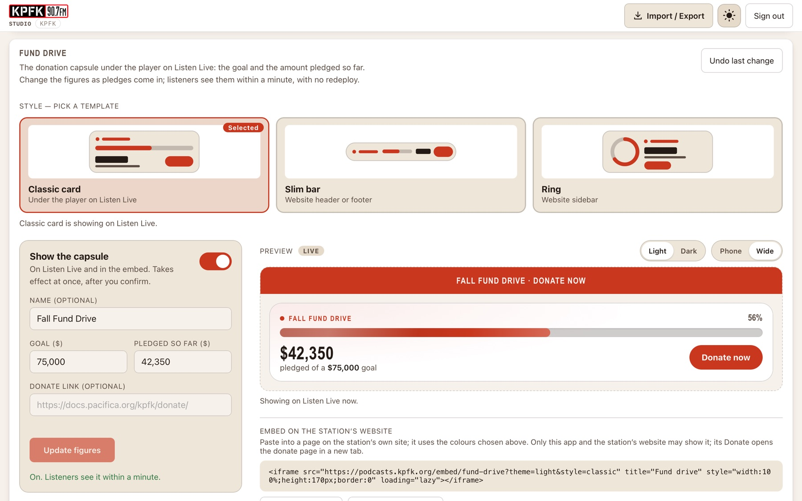
The studio's fund drive card — light (example figures)
Three styles, for kpfk.org too
The same capsule can sit on the station's own website: the studio gives a short snippet to paste. Staff pick a style for each spot — Classic under the player, a Slim bar for a page header or footer, a Ring for a sidebar — in light or dark. Only kpfk.org and the podcast site may show it.
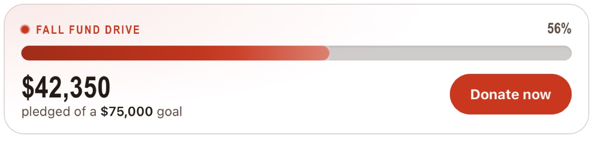
Classic — light
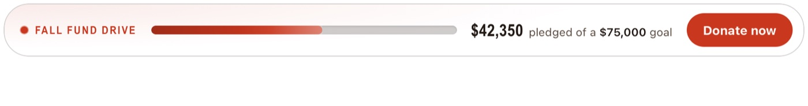
Slim — light
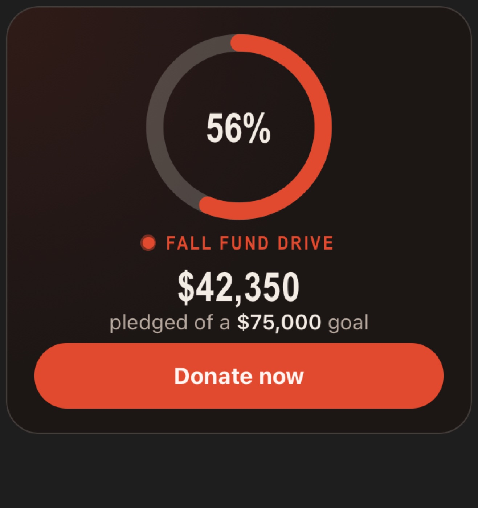
Ring — dark
For KPFK and Pacifica
Built around the station's rules
The station decides what is shown
Every program on KPFK's published schedule, plus its podcasts. Programs that leave the schedule leave the archive; music programs stay for 14 days; a program the station has no on-demand rights to can be held back entirely.
No extra work for the station
The website reads Pacifica's own archive feeds. When a program airs and is archived, it appears on its own; failed recordings are hidden and wrong running times corrected automatically.
Privacy first
No accounts, sign-ins, cookies for tracking, or ads. The station counts plays, listening time and page views — with no identifier of any kind, and never the words people search for. The website's public README says so.
Rights and corrections
A program the station has no on-demand rights to is held back everywhere — website, search, transcripts and the app. Episodes filed under the wrong program in Pacifica’s feed are shown under the right one.
Honest about machine transcripts
Titles, summaries and transcripts come from Pacifica's transcript service and are labelled as machine-made ("names and words may be wrong"). The station's own descriptions always take priority.
One archive, the website and the app
The KPFK Podcasts app reads this website's archive, so a fix or a new program here reaches the app too — and every Share in the app opens here.
Where it stands
Live at podcasts.kpfk.org since September 2026; the Listen Live page and fund drive controls since 27 October, ready for kpfk.org's Listen Live buttons.
Audited 15 October 2026 in the engines behind Safari and Chrome, on phone, tablet and computer sizes, in light and dark — every main screen and button clicked through.
Checked automatically by about 250 tests, plus browser tests that tap through the pages like a listener; every change is checked on the live site after it goes up.
What's next
A desktop app: KPFK Podcasts for Windows is built and in testing; a Mac version follows.
More for fund drives: start and end dates that switch a drive on and off by themselves.
Contacts and a footer: the station's phone lines and email, edited in the studio; a footer on every page.
Links that open the app: a shared link opens in the app when it is installed.
Hold back a program or episode from the studio — for rights, legal or a bad recording — without a technical change.
A picture to share: a designed image of each episode for Instagram.
The same website for other Pacifica stations: everything station-specific is in one settings file.